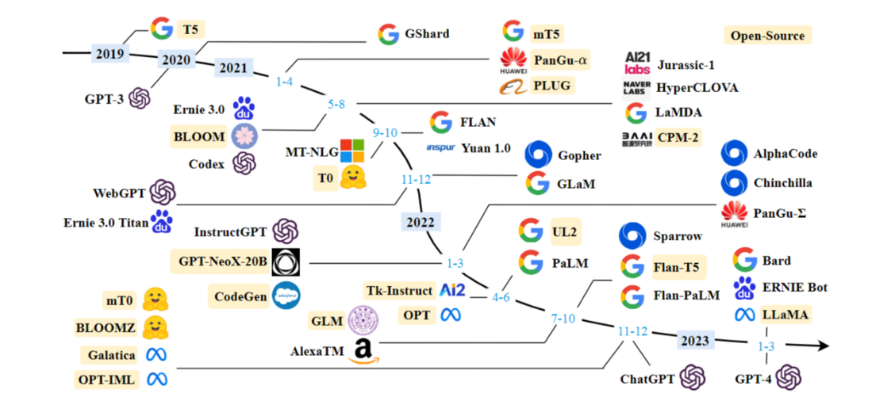

什么是大语言模型
大语言模型（Large Language Model，LLM）是一类基于深度学习构建的人工智能模型，其核心目标 是通过学习海量文本数据中的语言规律，使模型能够理解、生成和推理自然语言，从而完成问答、写 作、翻译、代码生成以及复杂任务推理等多种任务。与传统自然语言处理模型相比，大语言模型不再 针对单一任务进行专门设计，而是通过大规模预训练获得通用语言能力，在此基础上通过提示 （Prompt）或少量示例就能够适应不同任务，这也是近年来人工智能应用迅速发展的重要原因之一。

从技术角度来看，大语言模型通常建立在 Transformer 架构之上，这种结构最早在2017年的论文 《Attention is All You Need》中提出。Transformer 的核心思想是利用注意力机制（Attention Mechanism）来建模文本中不同词语之间的关系，从而捕捉长距离依赖关系。相比传统的循环神经网 络（RNN）或长短期记忆网络（LSTM），Transformer 不需要按顺序逐词处理文本，而是可以并行计 算整段文本中的关系，这使得模型能够在更大的数据规模和参数规模下进行训练。

大语言模型之所以被称为“大”，主要体现在三个方面。第一是参数规模巨大，许多主流模型都拥有 数十亿甚至数千亿个参数；第二是训练数据规模庞大，模型通常在互联网文本、书籍、论文、代码等
多种数据来源上进行预训练；第三是计算资源需求极高，模型训练往往需要大量 GPU 或专用加速硬件 进行分布式计算。正是由于参数规模、数据规模和算力规模的共同提升，模型才能逐渐具备接近人类 水平的语言理解与生成能力。
在实际运行过程中，大语言模型的基本工作方式可以理解为一种“概率预测”。模型在读取输入文本 后，会根据上下文信息预测下一个最有可能出现的 Token（文本片段），然后不断重复这一过程，从 而逐步生成完整的回答或文章。虽然这种机制看起来简单，但在大规模训练数据的支持下，模型可以 学习到复杂的语义关系、逻辑结构以及知识模式，因此能够表现出较强的推理和表达能力。
随着技术的发展，大语言模型已经从最初的文本生成工具逐渐演变为更复杂的智能系统核心。例如， 在智能客服系统中，大模型可以理解用户问题并生成回复；在代码生成领域，模型可以根据自然语言 描述自动编写程序；在智能搜索和知识问答系统中，模型能够结合外部知识库提供更加准确的信息。 此外，通过结合工具调用（Tool Use）、检索增强生成（RAG）以及 AI Agent 等技术，大语言模型正 在从单纯的文本模型发展为可以执行复杂任务的智能体基础设施。
总体来看，大语言模型的出现改变了传统人工智能系统的开发方式。过去的 AI 系统往往需要针对每个 任务单独训练模型，而在大模型时代，一个经过充分预训练的模型可以通过简单的提示或少量数据适 配大量任务，这种能力被称为 通用人工智能能力（General Capability） 的早期表现。正因如此，大 语言模型不仅成为当前人工智能研究和产业应用的核心技术，也成为构建 AI Agent、自动化系统和智 能应用的重要基础。